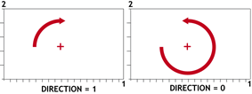
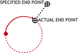
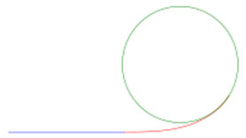
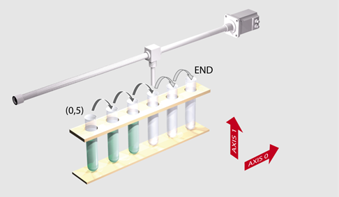
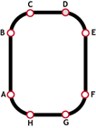

Axis Command
MOVECIRC(end1, end2, centre1, centre2, direction[, ta[, output]])
MC()
This command moves two orthogonal axes in such a way as to produce a circular arc at the tool point. The length and radius of the arc are defined by the five parameters in the command line. The move parameters are always relative to the end of the last specified move. This is the start position on the circle circumference. Axis 1 is the current BASE axis. Axis 2 is the next axis in the BASE array. The first 4 distance parameters are scaled according to the current unit conversion factor for the BASE axis.
An enhanced MOVECIRC function, using Transition Curves can be enabled by adding the transition angle and, optionally, the output offset parameters. This is available in firmware from version 2.0221 onwards.
For the MOVECIRC command to be correctly executed, the two axes generating the circular arc must have the same number of encoder pulses/linear axis distance. If this is not the case it is possible to adjust the encoder scales in many cases by using ENCODER_RATIO or STEP_RATIO .
If the end point specified is not on the circular arc. The arc will end at the angle specified by a line between the centre and the end point.
Neither axis may cross the set absolute repeat distance ( REP_DIST ) during a MOVECIRC. Doing so may cause one or both axes to jump or for their FE value to exceed FE_LIMIT .
|
end1: |
Position on BASE axis to finish at. |
|
|
end2: |
Position on next axis in BASE array to finish at. |
|
|
centre1: |
Position on BASE about which to move. |
|
|
centre2: |
Position on next axis in BASE array about which to move. |
|
|
direction: |
0 |
Arc is interpolated in an anti-clockwise direction |
|
1 |
Arc is interpolated in a clockwise direction |
|
|
2 |
Arc is interpolated using the shortest path to endpoint |
|
|
3 |
Arc is interpolated using the longest path to endpoint |
|
|
ta: |
Transition angle (in radians): the angle over which the circle should be transitioned into. |
|
|
output |
Option to output details of the transition curve to TABLE starting at TABLE(0) |
|
|
0 |
Revised arc centre X |
|
|
1 |
Revised arc centre Y |
|
|
2 |
Scale factor from transition curve calculations |
|
|
3 |
Radius of revised arc |
|
|
4 |
Transition curve length |
|
|
5 |
Total length |
|
|
6 |
Transition angle used (this can be less than requested if arc angle is insufficient) |
|
The direction is:


Transition curves can be applied where the acceleration forces need to be reduced at the point of entry to or exit from a circular arc.
The centripetal acceleration due to travelling along an arc is given by:
a = v 2 / r
NB: Curvature is 1/radius
It can be seen from this equation that a machine moving into or out from a circular arc at continuous speed will undergo a step change of acceleration that is highly speed dependant.

The diagram above shows the basic idea of transition curves. The red spiral section has a gradually changing curvature that smoothens out this change of acceleration. The diagram shows a large transition angle but even a few degrees of “transition curve” can dramatically reduce machine vibration in many cases.
Note that the transition curve facility modifies the position and radius of the arc. The acceptability of the modification depends on the application.
The command sequence to plot the letter ‘0’ might be:
MOVE(0, 6) 'Move A -> B
MOVECIRC(3, 3, 3, 0, 1) 'Move B -> C
MOVE(2, 0) 'Move C -> D
MOVECIRC(3, -3, 0, -3, 1) 'Move D -> E
MOVE(0, -6) 'Move E -> F
MOVECIRC(-3, -3, -3, 0, 1) 'Move F -> G
MOVE(-2, 0) 'Move G -> H
MOVECIRC(-3, 3, 0, 3, 1) 'Move H -> A
A machine is required to drop chemicals into test tubes. The nozzle can move up and down as well as along its rail. The most efficient motion is for the nozzle to move in an arc between the test tubes.

BASE(0, 1)
MOVEABS(0, 5) 'Move to position above first tube
MOVEABS(0, 0) 'Lower for first drop
WAIT IDLE
OP(15, ON) 'Apply dropper
WA(20)
OP(15, OFF)
FOR x = 0 TO 5
MOVECIRC(5, 0, 2.5, 0, 1) 'Arc between the test tubes
WAIT IDLE
OP(15, ON) 'Apply dropper
WA(20)
OP(15, OFF)
NEXT x
MOVECIRC(5, 5, 5, 0, 1) 'Move to rest position
Plot the letter ‘0’ using transition curves to reduce acceleration forces on the corners. Of each 45 degree arc, 10 degrees will be the transition in and 10 degrees for transition out.
ta = 10 * PI / 180 'Set the transition angle to 10 degrees
MOVEABS(0, 40) 'Move A -> B
MOVECIRC(30, 30, 30, 0, 1, ta) 'Move B -> C
MOVE(20, 0) 'Move C -> D
MOVECIRC(30, -30, 0, -30, 1, ta) 'Move D -> E
MOVE(0, -40) 'Move E -> F
MOVECIRC(-30, -30, -30, 0, 1, ta) 'Move F -> G
MOVE(-20, 0) 'Move G -> H
MOVECIRC(-30, 30, 0, 30, 1, ta) 'Move H -> A

LIMIT_BUFFERED , MOVECIRCSP , MHELICAL , MHELICALSP